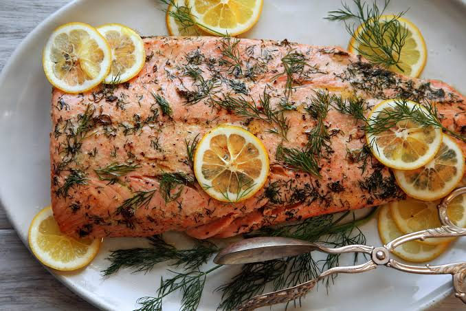

Home
Roasted Salmon's Recipe

People love roasted salmon for its buttery , flake texture and strong flavor
Ingredients
- Salmon: 1 fresh fillet (about 150 to 200 grams)
- Olive Oil: 1 teaspoon (or melted butter)
- Lemon: 1 wedge (for fresh juice)
- Seasoning: A good pinch of salt and black pepper
Steps
- Turn your oven to 200°C (400°F) and line a small baking tray with foil or greaseproof paper.
- Pat the salmon fillet dry with a paper towel, rub it with olive oil, and sprinkle the top with salt and pepper.
- Place the salmon skin-side down on the tray and bake for 12 to 15 minutes until the fish flakes easily with a fork.
- Squeeze the fresh lemon wedge over the warm salmon right before you eat it.